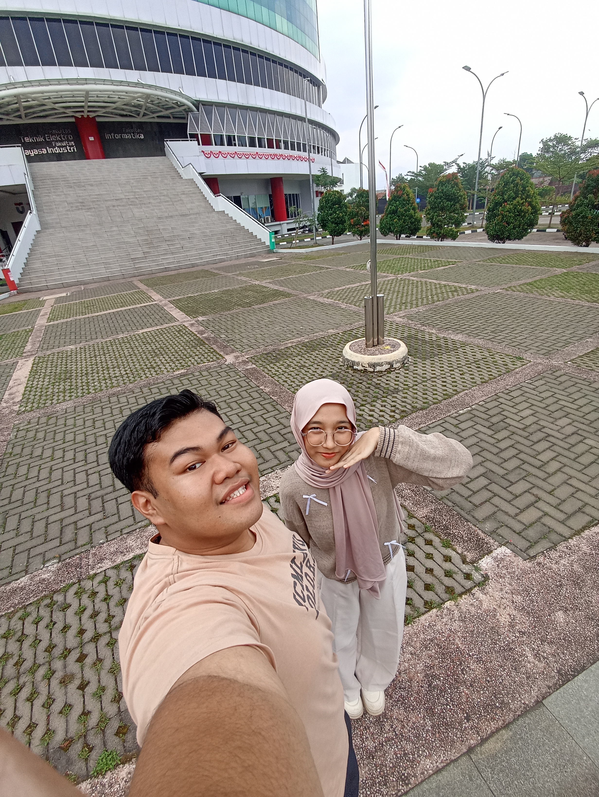
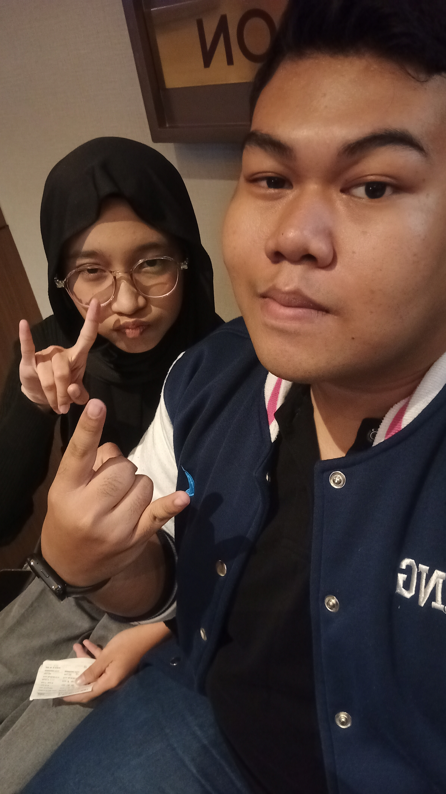
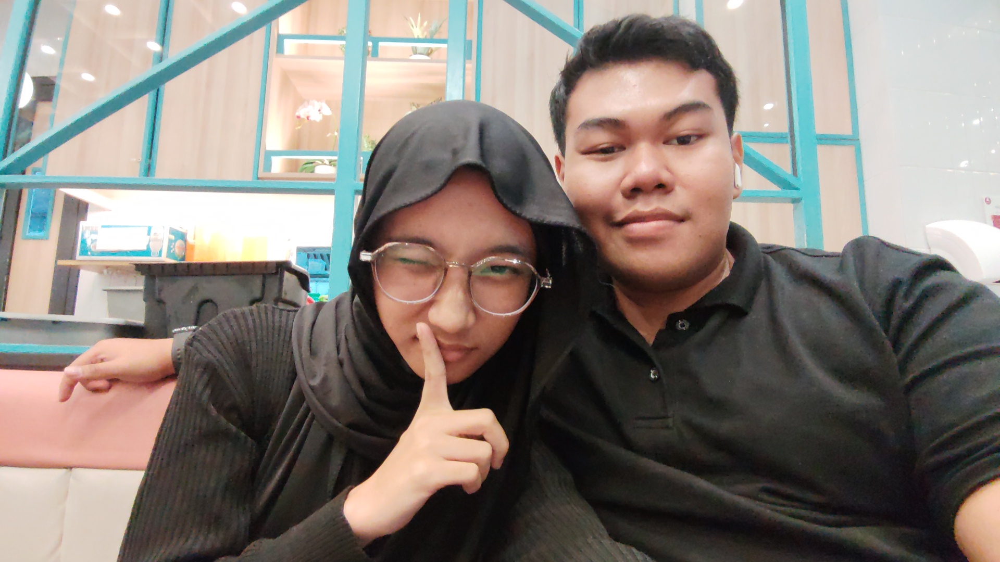
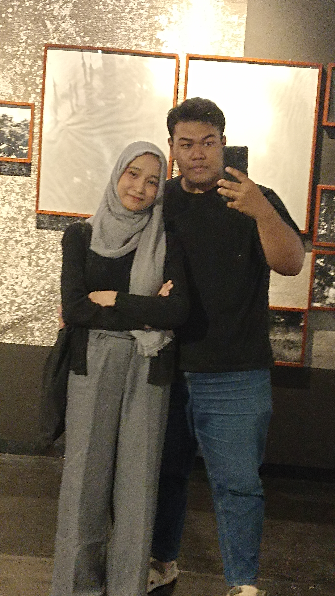
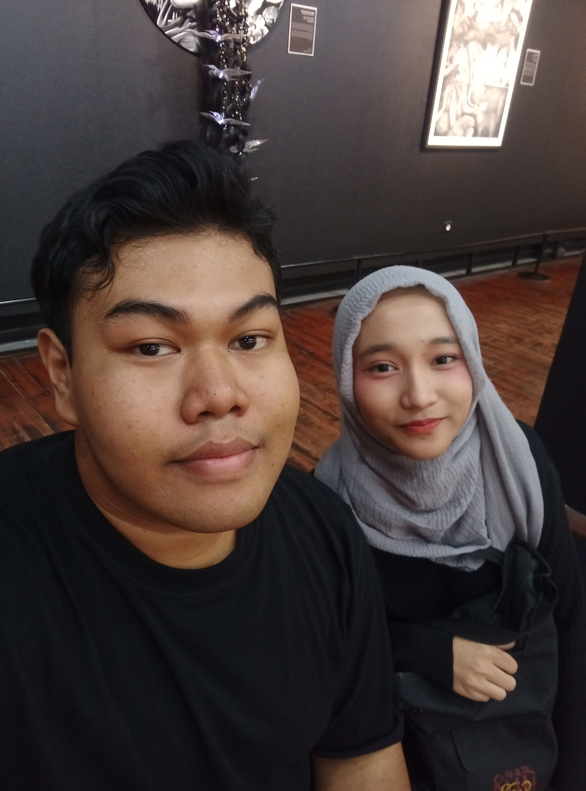

Awal Cerita
"I found a love for me..." Waktu seakan berhenti saat momen ini diabadikan. Sebuah awal dari banyak hal baik.

Jarak Bukan Halangan
Antara Bandung dan Depok memang terbentang jarak. Tapi setiap kali melihat senyummu, jarak itu terasa tidak ada artinya.

Saling Menguatkan
Di saat aku pusing dengan barisan kode dan kamu lelah dengan tebalnya buku asuhan keperawatan, kita selalu bisa jadi tempat pulang.

Kekuatanku
"Well I found a woman, stronger than anyone I know..." Kamu selalu bisa bangkit dan bersinar, seberat apa pun hari yang kamu lalui.

Menghargai Hal Kecil
Momen-momen sederhana bersamamu selalu terasa spesial. Hal kecil jadi sangat berharga asal kamu yang menemaninya.

Penawar Lelah
Melihat foto ini adalah caraku mengembalikan semangat. Senyummu adalah penawar paling ampuh untuk semua rasa penat.

Menuju Nanti
"I don't deserve this, darling, you look perfect tonight." Ini baru sebagian kecil dari cerita kita. Mari buat lebih banyak kenangan hebat ke depannya.